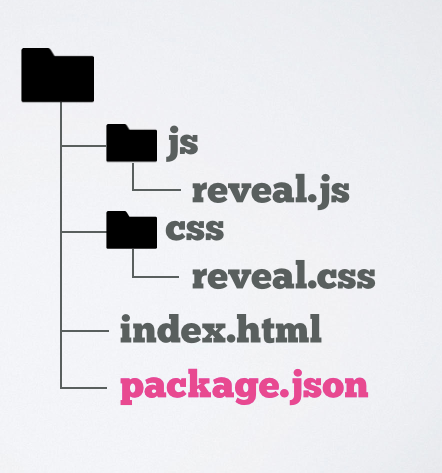
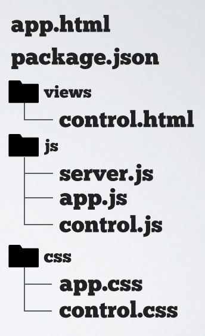

A TINY SYSTEM
FOR
BIG SCREENS
DESKTOPIFY
YOUR
WEB CHOPS
with node-webkit
@kosamari
Developer @LiveIntent
Tools for PEOPLE
Past Life...

TINY SYSTEM
Tools
TOOLS
- portable/reusable
- easily editable
- maintainable
Spread Sheet
- Only one file
- Shared drive / Email
- Everyone has access
- holds data
- Margin for error
BIG SCREEN
But how ?
Darkside...

I know...
- HTML
- CSS
- Javascript
OK google?

WHAT IS NODE-WEBKIT ?
node-webkit
- Web application runtime
- Node.js (system API)
- chromium browser (rendering)
- Runs on OSX, Windows and Linux

- Single, Shared event loop
- @rogerwang
- github.com/rogerwang/node-webkit
Quick Start
|
 |
More : package.json
// package.json
{
"name": "Myapp",
"main": "index.html",
"window": {
"frame": false,
"toolbar": false,
"resizable": true,
"width": 600,
"height": 400
}
}
https://github.com/rogerwang/node-webkit/wiki/Manifest-format
More : require / module
//index.html
<script>
var app = require('./js/app.js');
app.run();
...
//app.js
exports.run = function(arg){…}
More : GUI control
<p id="close"> CLOSE WINDOW </p>
var gui = require('nw.gui');
$('#close').click(function(){
gui.App.quit();
});
More : Menu Bar
var gui = require('nw.gui');
var menubar = new gui.Menu({ type: 'menubar' });
var mainMenu = new gui.Menu();
mainMenu.append(new gui.MenuItem({
label: 'version',
click: function(){ alert('Version : 0.0.1');}
}));
menubar.append(new gui.MenuItem({
label: 'MainMenu',
submenu: mainMenu
}));
gui.Window.get().menu = menubar;
Execute Node.js script
var exec = require('child_process').exec;
exec('npm start', {cwd:'/path/to/'});
}
Run
PACKAGE

https://github.com/rogerwang/node-webkit/wiki/How-to-package-and-distribute-your-apps
Recap
- You only need HTML/CSS/Javascript
- VERY easy to start
- Node.js + UI FTW !
BACK TO THE SCREEN


|
 |
app.html
<html>
<body>
<div id="graph">charts&graphs</div>
<div id="sidebar">
<div id="msg">message via socket.io</div>
</div>
<script>
require('./js/server.js');
require('./js/app.js');
...
</script>
</body>
</html>
server.js
var app = require('express')();
var server = require('http').createServer(app);
var port = 3000;
server.listen(port);
var hbs = require('hbs');
app.set('view engine', 'html');
app.engine('html', require('hbs').__express);
app.get('/', function (req, res) {
res.render('control'{ip:ip,port:port});
});
// IP address
var ip;
require('dns').lookup(require('os').hostname(),
function (err, address, fam) {
ip = address;
}
)
server.js
var app = require('express')();
var server = require('http').createServer(app);
...
var io = require('socket.io')(server);
io.sockets.on('connection', function (socket) {
socket.on('C2S', function (data) {
io.sockets.emit('S2C', {value:data.value});
document.getElementById('msg').innerHTML = value;
});
});
client.html
<html>
<head>
<script src="/socket.io/socket.io.js"></script>
<script>
var s = io.connect('http://{{ip}}:{{port}}');
function sendMessage() {
var msg = $('#message').val();
s.emit('C2S', {value:msg});
}
</script>
<body>
<form>
<input type="text" id="message"/>
<input type="submit" onclick="sendMessage()"/>
</form>
</body>
</html>
DEMO
Run
Why not make web apps?
Hey I made this app
oh cool!
I'm gonna put it up on our server
Oh...wait.
Did you pass security audit?
We need to place IP restriction...
What about VPN?
Who will be the Sys Admin?
What about CI?
I can not ship my app !
Other Options
Atom Shell by GitHub
https://github.com/atom/atom-shell/blob/master/docs/development/atom-shell-vs-node-webkit.md
Brackets Shell by Adobe
Chromium Embedded Framework
Summary
- Package your front-end project
- Server side app ? no problem !
- Node.js + UI FTW !